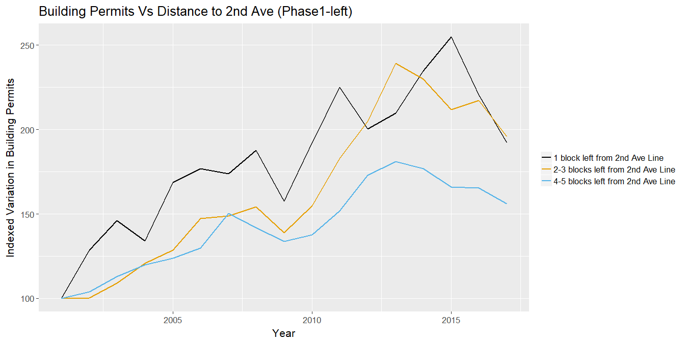
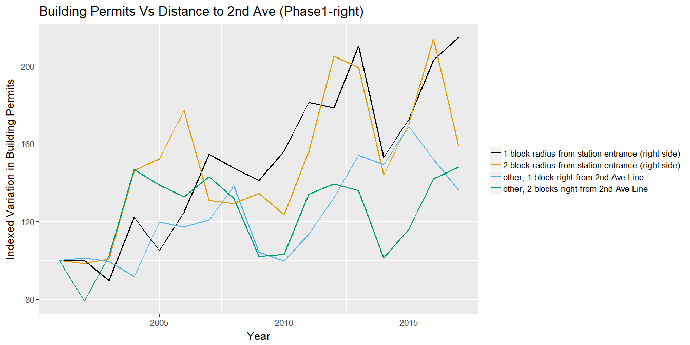

Analysis of Buliding Permits
One of the analysis we decided to perform to answer our main question, was to see if the 2nd Ave line project has affected the construction of new buildings (and remodeling of existing ones) in the project’s area of influence (basically, phase 1 and 2, because phase 3 and 4 have no funding commitments yet).
Analysis of Building Permits for Phase 1
To try to see if the 2nd Ave Line project has affected the construction of new buildings (and remodeling of existing ones) located near the Line, we added a column called “Distance” and used the block number to record the approximate distance (in blocks) from each building filing a building permit, to the 2nd Ave Line.
For this purpose, we used the Block number column/variable and the official tax map for the City of New York, which graphically shows the the block number, street names and other information in the map. The link where we were able to access the online Digital Tax Map is: http://gis.nyc.gov/taxmap/map.html
In such map, we were able to manually place the pre-existing Lexington-Fourth Avenue Line (green line), the phase 1 of the 2nd Ave project (yellow line) and the stations entrances, to visually determine the block numbers that are near the phase 1 of the 2nd Ave line and their distance (in blocks) to the Line and to an station entrance:

When determining the distances of the buildings to the 2nd Ave line, we differentiated between buildings to the left of the 2nd Ave Line and buildings to the right, because we suspected that the influence of the 2nd Ave Line may be greater for buildings to the right of the line than for buildings to the left, due to the proximity of the pre-existing Lexington-Fourth Avenue green Line, located just 2 blocks left from the 2nd Ave Line project.
Before starting with the analysis, we needed to convert dates columns/variables from Factor to Date format and Block number variable from Factor to numeric:
permits_upper_east <- read.csv("data/DOB_Permit_Issuance.csv")
permits_upper_east$Filing.Date = as.Date(permits_upper_east$Filing.Date, format = "%m/%d/%Y")
permits_upper_east$Issuance.Date = as.Date(permits_upper_east$Issuance.Date, format = "%m/%d/%Y")
permits_upper_east$Job.Start.Date = as.Date(permits_upper_east$Job.Start.Date, format = "%m/%d/%Y")
permits_upper_east$Block = as.numeric(permits_upper_east$Block)Buildings on the left side of the 2nd Ave Line - Phase 1
For blocks to the left of the 2nd Ave Line, as we can see in the map above, we can determine 3 different categories:
- block numbers that are within 1 block to the left;
- block numbers that are within 2-3 blocks to the left; and
- block numbers that are within 4-5 blocks to the left; from the 2nd Ave Line
Using the block numbers for each of the 3 categories detailed above, we can add a column called “Distance” and use the block number to record the approximate distance (in blocks) from each building filing a building permit, to the left of 2nd Ave Line - phase 1:
data_phase1 <- permits_upper_east %>%
mutate(Distance = ifelse(Block %in% c(1424:1427, 1529:1532,1539:1541,1423,1428:1433,
1525:1528,1533:1538,1646),
'1 block left from 2nd Ave Line',
ifelse(Block %in% c(1404:1407,1512:1515,1522:1524,1403,1408:1413,
1508:1511,1516:1521,1624),
'2-3 blocks left from 2nd Ave Line',
ifelse(Block %in% c(1384:1387,1495:1498,1505:1507,1383,1388:1393,
1491:1494,1499:1504,1602),
'4-5 blocks left from 2nd Ave Line',
'other'))))Now we can visualize and compare the variation of new and remodeling building permits over time, among the different categories detailed above.
For this purpose, we first summarize by Filing.Date year and Distance, then we scale the data and create an index to visualize variations over time with time series lines for recent years:
#First, summarize by Filing.Date year and Distance:
library(lubridate) #dates library
data_phase1 <- data_phase1 %>%
group_by(Filing.Year = year(Filing.Date), Distance) %>%
summarise(Total = n()) %>%
arrange(Filing.Year) #arranges from lowest to highest value
#Now, scale the data and create an index to visualize variations over time, then plot:
data_phase1 <- data_phase1 %>% group_by(Distance) %>%
filter(Filing.Year >= 2001 & Filing.Year <= 2017) %>%
filter(Distance != "other") %>%
mutate(index = 100*Total/Total[1]) %>% ungroup()
#Plot time series:
library(ggthemes)
ggplot(data_phase1, aes(Filing.Year, index, color = Distance)) + geom_line(lwd = 1) +
ggtitle("Building Permits Vs Distance to 2nd Ave (Phase1-left)") +
labs (x = "Year", y = "Indexed Variation in Building Permits") +
theme_grey(16) +
theme(legend.title = element_blank()) +
scale_colour_colorblind()
Conclusion: From the graph above, it seems that, for buildings located on the left side of the 2nd Ave phase 1 Line, the number of building permits filed is related to the distance in blocks from the phase 1 of 2nd Ave line project; with buildings closer to the Line, showing a higher increase in filed building permits than buildings far from the Line.
Since the phase 1 opened on January 1st, 2017; we see the decrease in building permit filings as an expected result, as one would expect that new/remodeled residential and business buildings are planned, and consequently building permits filed, ahead and not nearly of after the completion of the project. We can later try to verify if this theory is adequate when we analyze the effect of phase 2 of the project, which, as mentioned in the project background summary, is just in preliminary works stage.
Buildings on the right side of the 2nd Ave Line - Phase 1
For blocks to the right of the 2nd Ave Line, as we can see in the map above, there are just 3 blocks between the 2nd Ave Line and the East River, except for a small row of few blocks located four blocks from the line(at the north end), so we established 3 different categories as follows:
- block numbers that are within 1 block to the right;
- block numbers that are within 2 blocks to the right; and
- block numbers that are within 3-4 blocks to the right; from the 2nd Ave Line
Using the block numbers for each of those 3 categories, we followed the same procedure performed to analyze buildings to the left, going back to the original data to add a column called “Distance” and use the block number to record the approximate distance (in blocks) from each building filing a building permit, to the right of 2nd Ave Line - phase 1:
data_phase1 <- permits_upper_east %>%
mutate(Distance = ifelse(Block %in% c(1444:1447,1546:1549,1556:1558,1443,1448:1453,
1542:1545,1550:1555,1668),
'1 block right from 2nd Ave Line',
ifelse(Block %in% c(1464:1467,1563:1566,1573,1463,1468:1473,
1559:1562,1567:1571,1690),
'2 blocks right from line',
ifelse(Block %in% c(1482:1484,1580:1583,1480,1485:1490,1576:1579,
1584:1587,1590,1592,1589),
'3-4 blocks right from 2nd Ave Line',
'other'))))Now we can visualize and compare the variation of building permits over time, among the different categories detailed above, by following the same procedure described previously:
#First, summarize by Filing.Date year and Distance:
library(lubridate) #dates library
data_phase1 <- data_phase1 %>%
group_by(Filing.Year = year(Filing.Date), Distance) %>%
summarise(Total = n()) %>%
arrange(Filing.Year) #arranges from lowest to highest value
#Now, scale the data and create an index to visualize variations over time, then plot:
data_phase1 <- data_phase1 %>% group_by(Distance) %>%
filter(Filing.Year >= 1990 & Filing.Year <= 2017) %>%
filter(Distance != "other") %>%
mutate(index = 100*Total/Total[1]) %>% ungroup()
#Plot time series:
library(ggthemes)
ggplot(data_phase1, aes(Filing.Year, index, color = Distance)) + geom_line(lwd = 0.75) +
ggtitle("Building Permits Vs Distance to 2nd Ave (Phase1-right)") +
labs (x = "Year", y = "Indexed Variation in Building Permits") +
theme_grey(16) +
theme(legend.title = element_blank()) +
scale_colour_colorblind()
Preliminary Conclusions: Initially, we had plotted just recent years (similar to what we did for buildings on the left side of the line), but we noted that the category ‘3-4 blocks right from 2nd Ave line’ had a higher increase in variation than other lines which was not an expected result.
However, after plotting from the initial year when data is available (1990) we could see that historically, that block of buildings have always had a higher increase in the number of building permits, which made us think it is due to the fact that this last category is right on the edge of the East River, which would attract a higher number of projects than the other categories, due to the water views.
To try to isolate that phenomenon, we could just remove the category ‘3-4 blocks right from line’ which would be the category affecting the results, but then we would need some more visual evidence to see if the project seems to affect the filing of building permits or not.
For that purpose, we further differentiated the category ‘1 block right from 2nd Ave Line’ into the following 2 categories:
- buildings located within a 1 block radius from a 2nd Ave Line station entrance (right side)
- all other buildings, within 1 block right from 2nd Ave Line
Similarly, we further differentiated the category ‘2 blocks right from 2nd Ave Line’ into the following 2 categories:
- buildings located within 2 block radius from a 2nd Ave Line station entrance (right side)
- all other buildings, within 2 blocks right from 2nd Ave Line
Using the block numbers for each of the 4 categories detailed above, we followed the same procedure described previously, adding a column called “Distance” to record the approximate distance (in blocks) to the right of the 2nd Ave Line project - phase 1 and its stations entrances:
data_phase1 <- permits_upper_east %>%
mutate(Distance = ifelse(Block %in% c(1444:1447,1546:1549,1556:1558),
'1 block radius from station entrance (right side)',
ifelse(Block %in% c(1443,1448:1453,1542:1545,1550:1555,1668),
'other, 1 block right from 2nd Ave Line',
ifelse(Block %in% c(1464:1467,1563:1566,1573),
'2 block radius from station entrance (right side)',
ifelse(Block %in% c(1463,1468:1473,1559:1562,1567:1571,1690),
'other, 2 blocks right from 2nd Ave Line',
'other')))))Now we can visualize and compare the variation of building permits over time, among the different categories detailed above, by following the same procedure described previously:
#First, summarize by Filing.Date year and Distance:
library(lubridate) #dates library
data_phase1 <- data_phase1 %>%
group_by(Filing.Year = year(Filing.Date), Distance) %>%
summarise(Total = n()) %>%
arrange(Filing.Year) #arranges from lowest to highest value
#Now, scale the data and create an index to visualize variations over time, then plot:
data_phase1 <- data_phase1 %>% group_by(Distance) %>%
filter(Filing.Year >= 2001 & Filing.Year <= 2017) %>%
filter(Distance != "other") %>%
mutate(index = 100*Total/Total[1]) %>% ungroup()
#Plot time series:
library(ggthemes)
ggplot(data_phase1, aes(Filing.Year, index, color = Distance)) + geom_line(lwd = 0.75) +
ggtitle("Building Permits Vs Distance to 2nd Ave (Phase1-right)") +
labs (x = "Year", y = "Indexed Variation in Building Permits") +
theme_grey(16) +
theme(legend.title = element_blank()) +
scale_colour_colorblind()
Conclusion: For buildings located on the right side of the 2nd Ave phase 1 Line, it seems that the variation in building permits filed is indeed related to the 2nd Ave Line project, with buildings closer to a phase 1 station, showing a higher increase in filed building permits than buildings far from a phase 1 station.
Analysis of Building Permits for Phase 2
For phase 2 of the project, it is not as straightforward just to select blocks to the left and block to the right because, as we can see in the figure presented in the background, the phase 2 is not just a straight line like phase 1, but it turns left (west) near 125th street, to connect with the existing Lexington-Fourth Avenue green Line.
As a solution, we decided not to determine the distance left or right from the line but to compute the distance (in blocks) from each station, using the coordinates of the planned stations and the coordinates of the buildings filing a building permit.
With this methodology, we established the following 3 different categories:
- buildings located within 1 block radius from a 2nd Ave phase 2 station;
- buildings located within 1 and 2 blocks from a 2nd Ave phase 2 station; 3 buildings located within 2 and 3 blocks from a 2nd Ave phase 2 station.
Using the coordinates of the buildings (which are variables available in the dataset) and the coordinates of the planned stations, we were able to compute the distance in blocks as follows:
#coordinates of planned phase 2 106 station: 40.790526 / -73.942509
#coordinates of planned phase 2 116 station: 40.797087 / -73.938084
#coordinates of planned phase 2 125 station: 40.8041855 / -73.937359
#compute square distances (in coordinates difference square):
data_phase2 <- permits_upper_east %>%
group_by(Block,Lot) %>%
summarise(Lat=mean(LATITUDE, na.rm = TRUE), Long=mean(LONGITUDE, na.rm = TRUE)) %>%
mutate(d106=(Lat-40.790526)*(Lat-40.790526) +
(Long+73.942509)*(Long+73.942509),
d116=(Lat-40.797087)*(Lat-40.797087) +
(Long+73.938084)*(Long+73.938084),
d125=(Lat-40.8041855)*(Lat-40.8041855) +
(Long+73.937359)*(Long+73.937359))
#Tidy the data:
data_phase2 <- gather(data_phase2, Station, Distance, -Block, -Lot, -Lat, -Long)
#Summarize by minimum distance to any station:
data_phase2 <- data_phase2 %>%
group_by(Block,Lot) %>%
summarise(min_dist = min(Distance))
#1 block square distance (in coordinates diff. square): 0.00000129545
#2 blocks square distance (in coordinates diff. square): 0.00000259091
#2 blocks square distance (in coordinates diff. square): 0.00000388636
#Create variable min-dist to store the minimum sq. distance to a phase 2 station:
data_phase2 <- data_phase2 %>%
mutate(Distance = ifelse(min_dist <= 0.00000129545,
'Within 1 block from a phase 2 station',
ifelse(min_dist <= 0.00000259091,
'whithin 1 and 2 blocks from a phase 2 station',
ifelse(min_dist <= 0.00000388636,
'within 2 and 3 blocks from a phase 2 station',
'other'))))
#merge with original data:
data_phase2 <- merge(permits_upper_east, data_phase2, by = c("Block", "Lot"))
#order factors:
data_phase2$Distance <- factor(data_phase2$Distance,levels=c('Within 1 block from a phase 2 station',
'whithin 1 and 2 blocks from a phase 2 station',
'within 2 and 3 blocks from a phase 2 station',
'other'))Now we can visualize and compare the variation of building permits during recent years, among the different categories detailed above, by following the same procedure described previously:
#First, summarize by Filing.Date year and Distance:
library(lubridate) #dates library
data_phase2 <- data_phase2 %>%
group_by(Filing.Year = year(Filing.Date), Distance) %>%
summarise(Total = n()) %>%
arrange(Filing.Year) #arranges from lowest to highest value
#Now, scale the data and create an index to visualize variations over time, then plot:
data_phase2 <- data_phase2 %>% group_by(Distance) %>%
filter(Filing.Year >= 1990 & Filing.Year <= 2017) %>%
filter(Distance != "other") %>%
mutate(index = 100*Total/Total[1]) %>% ungroup()
#Plot time series:
library(ggthemes)
ggplot(data_phase2, aes(Filing.Year, index, color = Distance)) + geom_line(lwd = 0.75) +
ggtitle("Building Permits Vs Distance to 2nd Ave (Phase 2)") +
labs (x = "Year", y = "Indexed Variation in Building Permits") +
theme_grey(16) +
theme(legend.title = element_blank()) +
scale_colour_colorblind()
Conclusions: For buildings located in the vicinity of the of the planned 2nd Ave phase 2 Line, it seems that the variation in building permits filed is indeed related to the 2nd Ave Line phase 2 project, with buildings closer to a planned phase 2 station, consistently showing a higher increase in filed building permits than buildings further away from a planned phase 2 station.
Contrary to our findings in phase 1 which opened on January 1st, 2017, where we found a decrease in building permit filings during 2017 (which we considered reasonable as one would expect that new/remodeled residential and business buildings are planned ahead and not after the finalization of the project); here we can see that the building permit filings actually increased during 2017, when preliminary works for this phase started, and they have higher increases starting in 2011-2013, after some recovery from 2008 financial crisis, when news were coming out about the so long waited 2nd Ave Line finally becoming a reality and tunneling machines successfully making its way through ground, building the tunnels for phase 1.
Additional work performed: After our analysis, we tried several plots to try to find out if there was any different relationship by plotting buildings owned by individuals Vs buildings owned by corporations, resiendtial buildings vs non-resitential buildings, but we didn’t find any different results.
As final step, we decided to present the results from our EDA in a map, so we summarized and saved our data, using the variables LATITUDE and LONGITUDE, instead of using the Distance variable that we created for EDA purposes:
#First, save frequency (one row per observation):
data_geo <- permits_upper_east %>%
mutate(Filing.Year = year(Filing.Date))%>%
select(Filing.Year, LATITUDE, LONGITUDE) #%>%
#arrange(Filing.Year) #arranges from lowest to highest value
#save results to be used for presentation purposes:
#write.table(data_geo,file="Building_Permits_Lat-Long-all-obvs.csv",sep=",",row.names=F)
#Now, save frecuency count:
library(lubridate) #dates library
data_geo2 <- permits_upper_east %>%
group_by(Filing.Year = year(Filing.Date), LATITUDE, LONGITUDE) %>%
summarise(Total = n()) %>%
arrange(Filing.Year) #arranges from lowest to highest value
#save results to be used for presentation purposes:
#write.table(data_geo2,file="Building_Permits_Lat-Long-Counted.csv",sep=",",row.names=F)
#Finally, save variation index:
data_geo_index <- data_geo2 %>% group_by(LATITUDE, LONGITUDE) %>%
mutate(index = 100*Total/Total[1]) %>% ungroup() %>%
select(Filing.Year, index, LATITUDE, LONGITUDE)
#save results to be used for presentation purposes:
#write.table(data_geo_index,file="Building_Permits_Lat-Long-index.csv",sep=",",row.names=F)